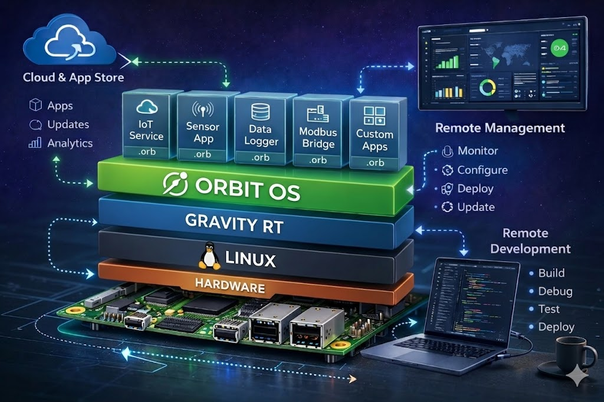

✦ Embedded Linux · Community Edition — Raspberry Pi
OrbitOS transforms embedded Linux devices into a programmable ecosystem. Access hardware, networking, and system services locally or remotely, with built-in security and real-time control.
The Problem
Reading GPIO, configuring networking, securing remote access, handling OTA updates and building APIs — every team ends up writing the same platform code again and again. OrbitOS provides that platform.
What it does
Access and control your device from any language, locally or remotely.
OrbitOS exposes device capabilities as APIs you can call from apps or tools — locally via UDS or remotely via mTLS. GPIO, PWM, I²C, SPI, UART, WiFi, Ethernet, Bluetooth and network controls all work consistently across every OrbitOS device.
Every connection is encrypted and authenticated. OrbitOS verifies every caller before granting access — no open ports, no implicit trust. Safe for field and industrial deployments.
Applications run in isolation and communicate through defined interfaces. If an app fails, the runtime restarts it automatically — giving you reliability and maintainability.
OSTree-backed updates with delta downloads, instant rollback and zero-downtime upgrades. Devices can safely update in the field without risk of bricking.
Develop applications in Go, Python, Java or C++.
Apps are packaged into a unified .orb format ensuring consistent deployment across any OrbitOS device.
Develop against real hardware without deploying first. Run your application directly from your laptop while interacting with device peripherals in real time using the same SDK and APIs. Develop locally. Test on real hardware. Deploy when ready.
OrbitOS is designed for embedded and edge systems. Efficient runtime services allow apps to run on resource-constrained devices while maintaining modern development capabilities.
Architecture
Gravity RT — the core of OrbitOS — runs your applications, controls hardware, and enforces security in a single unified runtime. OrbitOS exposes device capabilities as APIs you can call from apps or tools — locally or remotely, with security built in. Every request is verified before access is granted.

App Distribution
Browse, install, and manage applications from a central store. Each app is verified and encrypted, ensuring trusted deployment on your devices.
Users can browse and install apps safely from a centralized store.
Apps are packaged in .orb format and cryptographically verified before installation.
Installations and updates are transactional — complete fully or rollback automatically.
The runtime manages app lifecycle: start, stop, supervise apps automatically, with granular permissions.
Developer Experience
Connect from any machine. Control hardware. In any language.
// Connect — UDS on-device or TCP remotely, same API
device, _ := sdk.NewClientAuto(DEVICE_IP_ADDRESS)
defer device.Close()
// GPIO — set direction and drive a pin high
led := sdk.GpioPin{Number: 18, ChipNumber: 0}
device.GpioManager.SetDirection(led, true) // OUTPUT
device.GpioManager.SetLevel(led, true) // HIGH
// PWM — 1 kHz signal at 50% duty cycle
pwmPins, _ := device.GpioManager.ListPwmPins()
device.GpioManager.SetPwm(pwmPins[0], 0.5, 1000.0)
// UART — open ttyAMA0 at 115200 baud and send a command
device.UartManager.Open(sdk.UartConfig{Port: "/dev/ttyAMA0", Baudrate: 115200})
device.UartManager.Write("/dev/ttyAMA0", []byte("AT\r\n"))
// I²C — scan bus and read a sensor register
addrs, _ := device.I2CManager.ScanBus(1)
data, _ := device.I2CManager.WriteRead(1, addrs[0], []byte{0x00}, 2)
Be the first to know when the CommunityI